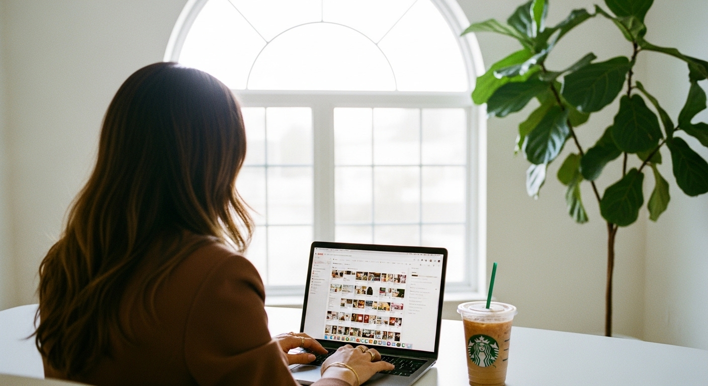
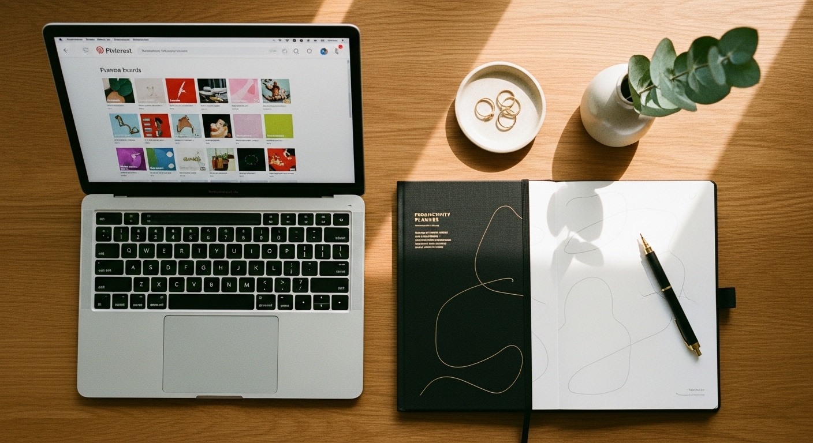
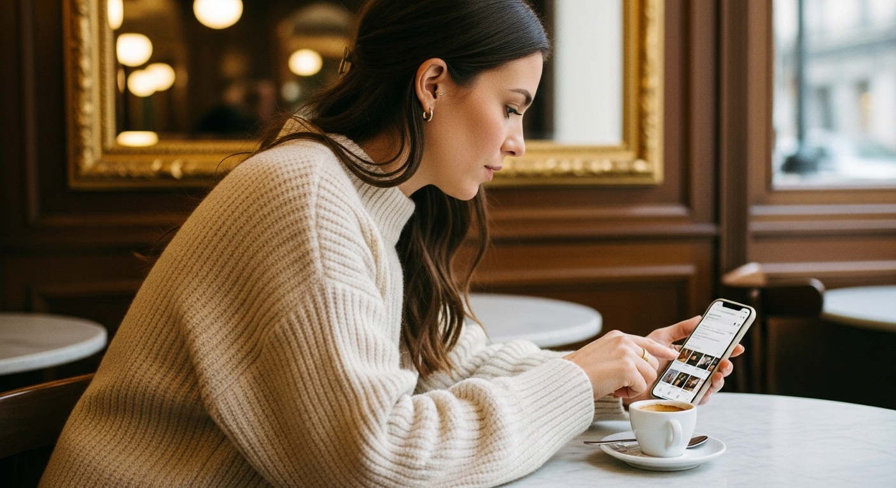
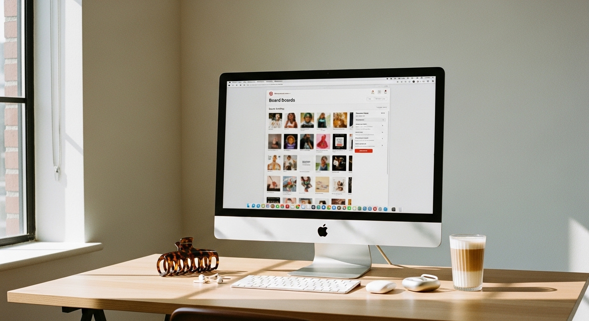
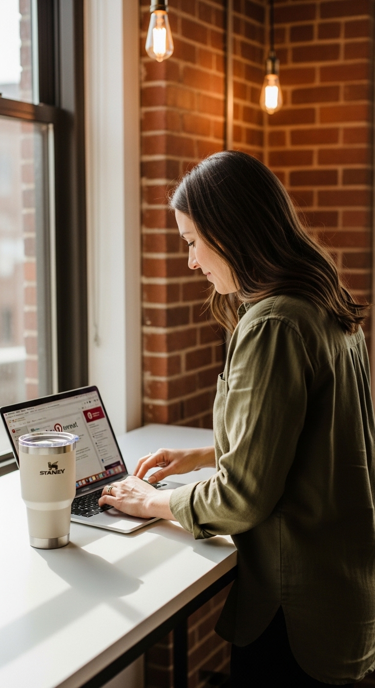

how to delete a board on pinterest





HOW TO DELETE A BOARD ON PINTEREST
To delete a board on Pinterest, open the board, tap the three-dot menu, select "Edit board," scroll to the bottom, and tap "Delete board." The whole process takes about 30 seconds. But before you do it, you should know that Pinterest keeps deleted boards for 7 days before permanent removal - and for most business owners, archiving is the smarter choice.
Here's why that matters: when you delete a board, every single pin on that board goes with it. All those hours of curation, all those pins driving traffic to your website, all that keyword-rich content working for you in the background - gone. And unlike archiving, deletion means you lose the data too.
I've seen coaches delete entire boards during a rebrand, only to realize weeks later that one of those "off-brand" boards was actually their top traffic source. That's an expensive mistake when you could have simply hidden it instead.
So when should you actually delete a board versus archive it?
That's what this guide covers. I'll walk you through the exact steps for desktop and mobile, show you how to handle group boards you don't own, and give you a decision framework so you don't accidentally torch months of work. If you're doing a Pinterest cleanup for your business, this is where you start.
THE DECISION FRAMEWORK: DELETE, ARCHIVE, OR LEAVE
Before you touch the delete button, run through this quick audit. Most business owners skip this step and regret it later.
Check your analytics first. Go to Pinterest Analytics and look at which boards are actually driving clicks to your website. That board you created three years ago about "small business tips"? It might still be sending you 200 monthly visitors even though you forgot it existed. I've worked with service providers who deleted "outdated" boards only to watch their website traffic drop by 30% the following month.
Ask yourself these four questions:
- Does this board still drive any traffic to my site?
- Could I repurpose this content seasonally or during a future pivot?
- Would I regret losing these curated pins permanently?
- Is this board actively hurting my brand - or just irrelevant?
Here's the real difference:
Delete when the board is empty, was created by mistake, or contains content that genuinely damages your brand. You're certain you never want it back.
Archive when the board is off-brand but still functional. It hides from public view, preserves all your pins and followers, and stays recoverable forever. This is the right choice 90% of the time for business accounts.
Leave when it's a group board you joined but don't own. You can't delete these - you can only remove yourself as a collaborator.
If you're cleaning up your Pinterest business account, archive first and delete only what you're absolutely sure about.
HOW TO DELETE A PINTEREST BOARD ON DESKTOP
The desktop process is straightforward once you know where everything is. Here's the step-by-step:
Step 1: Log into Pinterest at pinterest.com and click your profile picture in the top-right corner.
Step 2: Navigate to the "Saved" tab to see all your boards.
Step 3: Click on the board you want to delete to open it.
Step 4: Click the three-dot icon (ellipsis) in the top-right area of the board.
Step 5: Select "Edit board" from the dropdown menu.
Step 6: Scroll all the way to the bottom of the edit panel. The delete option is intentionally buried.
Step 7: Click "Delete board."
Step 8: Confirm by clicking "Delete" again in the popup warning.
DALL-E / ChatGPT image prompt
A realistic mockup screenshot of the Pinterest board edit panel on desktop. White background, clean interface. Left side shows board cover image preview. Right side shows form fields: Board name, Description, and a toggle for "Keep this board secret." At the very bottom, a red "Delete board" button is visible. Pinterest red (#e60023) accent colors on save button. Top right shows X to close panel. Horizontal 16:9 ratio, high resolution, flat modern UI design.
Step 9 (If you change your mind): You have 7 days to recover. Go to your profile, scroll past all your boards to the very bottom, and look for "Recently deleted." Click it, find your board, and hit restore.
The delete option is at the bottom of the edit panel because Pinterest really doesn't want you accidentally deleting boards. This is intentional design - not a bug.
HOW TO DELETE A PINTEREST BOARD ON MOBILE
The mobile process is nearly identical, but the button locations shift slightly depending on whether you're using iOS or Android.
Step 1: Open the Pinterest app and tap your profile picture in the bottom-right corner.
Step 2: Tap the board you want to delete to open it.
Step 3: Tap the three-dot icon at the top-right corner of the screen.
Step 4: Select "Edit board" from the menu.
Step 5: Scroll to the bottom of the edit screen.
Step 6: Tap "Delete board."
Step 7: Confirm deletion by tapping "Delete" when prompted.
DALL-E / ChatGPT image prompt
A realistic mockup screenshot of the Pinterest mobile app board edit screen on an iPhone. White background with board name field at top, description field below, collaborator options, and visibility settings. At the bottom of the scrolled screen, a red "Delete board" text button is visible. Pinterest red (#e60023) used for the save button in top right. Standard iOS interface elements. Portrait 9:16 aspect ratio, realistic flat UI design.
One thing that catches people: on some Android devices, you might need to tap "More options" before you see the edit board choice. If you're not seeing it, look for an additional menu layer.
The 7-day recovery window works the same on mobile. Your recently deleted boards appear at the bottom of your profile screen in the app.
WHY ARCHIVING IS ALMOST ALWAYS BETTER FOR BUSINESS OWNERS
Let me tell you about Sarah, a business coach I worked with last year. She started on Pinterest sharing "side hustle tips" but had niched down to launch strategy for course creators. She had 15 old boards about generic entrepreneurship topics that no longer matched her brand. Her instinct was to delete them all during a profile cleanup.
We checked her analytics first. One of those "irrelevant" boards - "Productivity Tips for Entrepreneurs" - was still sending over 400 clicks per month to her website. That's free traffic she almost deleted.
Here's what archiving does:
- Hides the board from your public profile immediately
- Preserves every pin, all followers, and all engagement data
- Keeps the board searchable by Pinterest's algorithm (so it can still drive traffic)
- Lets you restore it instantly at any time - no 7-day window, no limits
To archive instead of delete: Follow the same steps to reach the edit board menu, but instead of scrolling to delete, look for the "Archive this board" toggle near the top of the settings. Enable it. Done.
Archived boards move to the bottom of your profile under an "Archived" section that only you can see. Your followers, website visitors, and potential clients never see them.
Archive is reversible forever. Deletion is reversible for 7 days. For business owners who might pivot, rebrand, or simply want to do seasonal content (think "Holiday Gift Ideas" boards you only show in Q4), archiving protects your work.
HOW TO LEAVE A GROUP BOARD YOU DON'T OWN
This trips up so many people. You joined a bunch of group boards years ago for exposure. Now half of them are full of spam, and you want them off your profile. But when you go to delete them - there's no delete option.
You can't delete a group board you don't own. Only the board creator can delete it. You can only leave.
Here's the process:
Step 1: Open the group board.
Step 2: Tap the three-dot icon.
Step 3: Select "Leave board" (not delete - this option won't exist since you're not the owner).
Step 4: Confirm you want to leave.
Important detail: when you leave a group board, any pins you added to that board stay there. They don't come back to your account - they remain on the group board you just left. If you want to keep those pins, save them to one of your own boards first, then leave.
For business owners doing a proper Pinterest audit, review all your group boards. If you're in boards that no longer match your niche or have become spam-filled, leaving them actually helps your account. Pinterest notices when you're associated with low-quality content.
HOW TO DELETE A BOARD SECTION WITHOUT LOSING PINS
Sometimes you don't want to delete an entire board - just a section within it. Maybe you organized your "Business Tips" board into sections by topic, and one section is now irrelevant. Here's how to remove the section while keeping the pins.
Step 1: Open the board and navigate to the section you want to remove.
Step 2: Tap the three-dot icon on the section header.
Step 3: Select "Edit section."
Step 4: Choose "Organize" and select all pins in that section.
Step 5: Move them to the main board or another section.
Step 6: Now go back and delete the empty section.
If you delete a section that still has pins in it, those pins get moved to the main board automatically. They don't disappear. But if you want control over where they go, move them first.
This is useful when you're restructuring boards - maybe you had too many sections and want to simplify, or the section names no longer make sense for your business.
If you're managing Pinterest as part of your broader Pinterest marketing strategy, keeping your boards organized helps both your audience and the algorithm understand what you offer.
MASS DELETING MULTIPLE BOARDS: YOUR OPTIONS
Here's the frustrating truth: Pinterest's native interface only lets you delete one board at a time. If you have 40 boards to remove, that's 40 separate delete processes.
Native Pinterest approach: Delete boards one by one using the steps above. Tedious but safe.
Third-party option - Redact: This tool can mass-delete multiple boards at once. Here's how it works:
- Visit redact.dev and create an account
- Connect your Pinterest account through their interface
- In settings, choose to delete boards
- Select multiple boards at once
- Confirm mass deletion
A word of caution: before using any third-party tool, review what permissions you're granting. Mass deletion is permanent after the 7-day window. I'd recommend archiving in bulk if possible (though Pinterest doesn't make that easy either) rather than mass deleting unless you're absolutely certain.
For business owners doing a complete overhaul - say, pivoting from fitness coaching to business coaching - mass archiving all old boards and starting fresh is usually smarter than mass deletion. You preserve the account history, follower count, and domain authority while building new content.
If managing all of this feels overwhelming and you'd rather focus on your actual business, Switzertemplates' Pinterest services handle strategy and account setup so you're not spending hours on cleanup and optimization yourself.
THE BEFORE-DELETION CHECKLIST
Before you delete any board, run through this checklist. It takes two minutes and can save you from a costly mistake.
1. Check board analytics
Go to Pinterest Analytics > Content > Boards. Look at impressions, saves, and outbound clicks. Any board driving meaningful traffic deserves a second thought.
2. Review for external links
If pins on this board link to your website, products, or lead magnets, deleting removes those traffic paths. Make sure you're not cutting off an active funnel.
3. Assess pin recoverability
Are there pins on this board you'd want to keep? Pinterest doesn't let you bulk-transfer pins to another board. You'd need to manually save each pin to a different board before deleting. Decide if that's worth your time.
4. Consider seasonal value
Boards like "Holiday Marketing Ideas" or "Summer Wedding Inspiration" might seem irrelevant in March, but they're gold in November. Archive seasonal boards instead of deleting.
5. Check for collaborators
If others were invited to your board, they lose access when you delete. Give them a heads up if the content mattered to them.
6. Screenshot for reference
If there's any chance you'll want to remember what was on this board, take a quick screenshot before deletion. The 7-day recovery window isn't that long.
DALL-E / ChatGPT image prompt
A realistic mockup screenshot of Pinterest Analytics board performance view. White background, Pinterest red (#e60023) navigation. Shows a list of 5 boards with columns: Board name, Impressions, Saves, Outbound clicks. Top board shows "Business Tips for Coaches" with 12,483 impressions, 847 saves, 234 outbound clicks. Data presented in clean table format with light grey alternating row backgrounds. Left sidebar shows Analytics navigation menu. Horizontal 16:9 ratio, high resolution, flat modern UI design.
FREQUENTLY ASKED QUESTIONS
Why can't I delete a Pinterest pin or board?
If the delete option isn't appearing, you're likely trying to delete a group board you don't own - in which case you can only leave, not delete. For individual pins, the delete option should appear in the pin's edit menu. If it's genuinely missing, try logging out and back in, clearing your cache, or switching between the app and desktop version.
How do I delete a board without deleting the pins?
You can't - not through Pinterest's native tools. When you delete a board, all pins on it go too. Your only options are to manually move pins one by one to another board before deleting, or to archive the board instead of deleting it (which hides it but keeps everything intact).
Can you permanently delete Pinterest boards?
Yes. When you delete a board, it goes to "Recently deleted" for 7 days. After that window, it's permanently removed along with all its pins. There's no recovery after those 7 days pass.
Where is the delete button on Pinterest?
It's intentionally buried. Open the board, click the three-dot menu, select "Edit board," then scroll all the way to the bottom of the edit panel. The delete option is at the very end - Pinterest designed it this way to prevent accidental deletions.
How do I remove a board I didn't create from my profile?
If it's a group board where you're a collaborator, you need to leave it rather than delete it. Open the board, tap the three-dot menu, and select "Leave board." The board disappears from your profile, though any pins you added stay on the group board.
How do I delete a board section without losing the pins inside it?
Open the section, select "Organize," choose all the pins, and move them to the main board or another section. Once the section is empty, you can delete it safely. If you delete a section with pins still in it, those pins move to the main board automatically - they don't disappear.
KEEPING YOUR PINTEREST PROFILE CLEAN FOR BUSINESS
Knowing how to delete a board on Pinterest is straightforward - the harder part is deciding whether you should. For coaches, service providers, and small business owners, a cluttered Pinterest profile can look unprofessional, but deleting the wrong boards can quietly kill traffic you didn't know you had.
My recommendation: audit before you act. Check analytics, archive what's off-brand but still functional, and only delete what genuinely has no value. The 7-day recovery window is your safety net, but it's better not to need it.
If your Pinterest presence needs a proper overhaul - optimized boards, keyword-rich pins, and a setup that actually drives website traffic - check out my done-for-you Pinterest services. I handle the strategy, setup, and optimization so you can focus on running your business instead of reorganizing boards for hours.
Your Pinterest profile is a traffic machine when it's working right. Keep it clean, keep it strategic, and let it do the heavy lifting for your business.
Let me know in the comments below if you want me to cover any branding or marketing topics in more depth, and I'll make sure to create a blog post about it in the future.